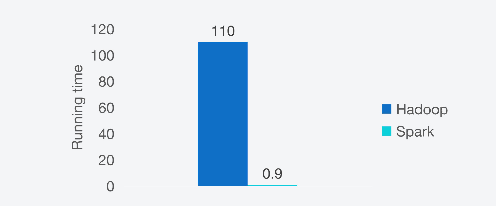
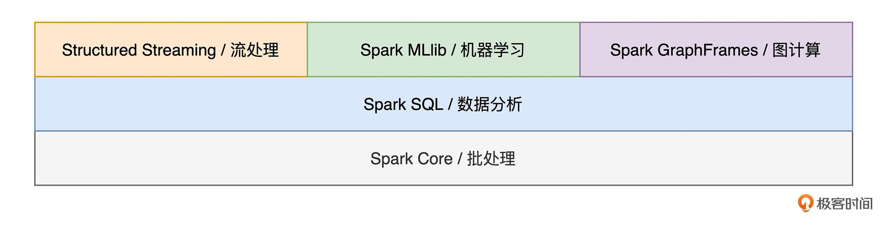
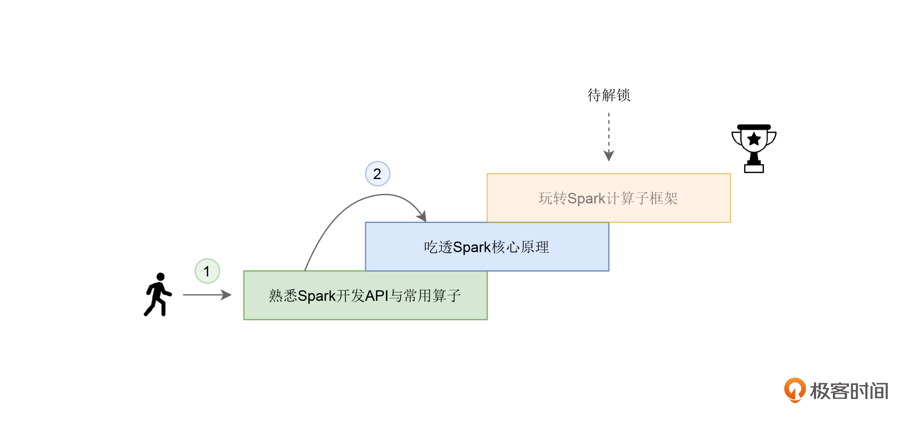
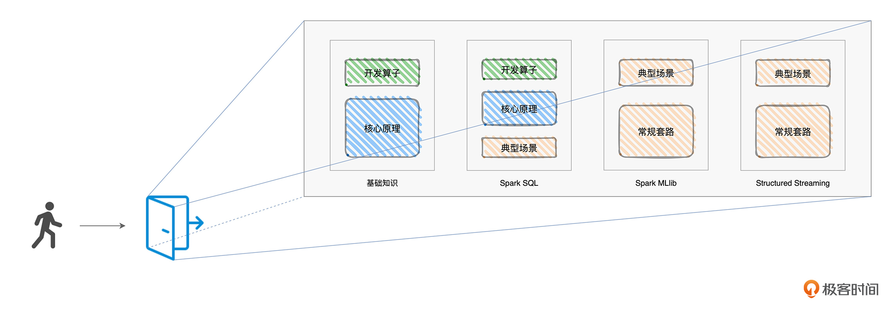
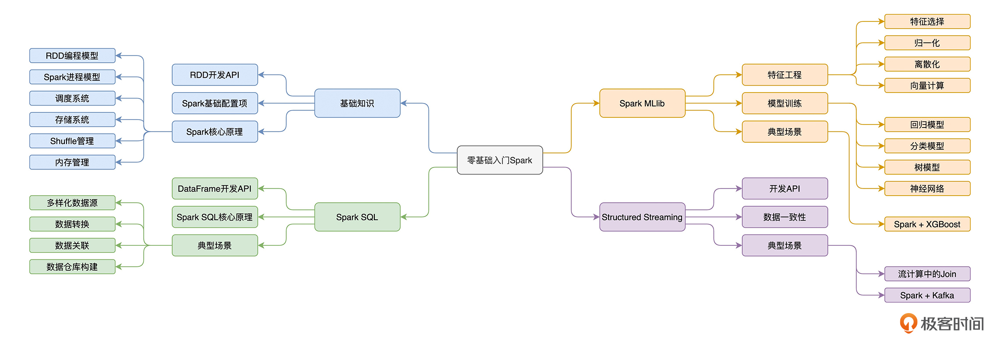

- 00 开篇词 入门Spark，你需要学会“三步走”.md.html
- 01 Spark：从“大数据的Hello World”开始.md.html
- 02 RDD与编程模型：延迟计算是怎么回事？.md.html
- 03 RDD常用算子（一）：RDD内部的数据转换.md.html
- 04 进程模型与分布式部署：分布式计算是怎么回事？.md.html
- 05 调度系统：如何把握分布式计算的精髓？.md.html
- 06 Shuffle管理：为什么Shuffle是性能瓶颈？.md.html
- 07 RDD常用算子（二）：Spark如何实现数据聚合？.md.html
- 08 内存管理：Spark如何使用内存？.md.html
- 09 RDD常用算子（三）：数据的准备、重分布与持久化.md.html
- 10 广播变量 & 累加器：共享变量是用来做什么的？.md.html
- 11 存储系统：数据到底都存哪儿了？.md.html
- 12 基础配置详解：哪些参数会影响应用程序稳定性？.md.html
- 13 Spark SQL：让我们从“小汽车摇号分析”开始.md.html
- 14 台前幕后：DataFrame与Spark SQL的由来.md.html
- 15 数据源与数据格式：DataFrame从何而来？.md.html
- 16 数据转换：如何在DataFrame之上做数据处理？.md.html
- 17 数据关联：不同的关联形式与实现机制该怎么选？.md.html
- 18 数据关联优化：都有哪些Join策略，开发者该如何取舍？.md.html
- 19 配置项详解：哪些参数会影响应用程序执行性能？.md.html
- 20 Hive + Spark强强联合：分布式数仓的不二之选.md.html
- 21 Spark UI（上）：如何高效地定位性能问题？.md.html
- 22 Spark UI（下）：如何高效地定位性能问题？.md.html
- 23 Spark MLlib：从“房价预测”开始.md.html
- 24 特征工程（上）：有哪些常用的特征处理函数？.md.html
- 25 特征工程（下）：有哪些常用的特征处理函数？.md.html
- 26 模型训练（上）：决策树系列算法详解.md.html
- 27 模型训练（中）：回归、分类和聚类算法详解.md.html
- 28 模型训练（下）：协同过滤与频繁项集算法详解.md.html
- 29 Spark MLlib Pipeline：高效开发机器学习应用.md.html
- 30 Structured Streaming：从“流动的Word Count”开始.md.html
- 31 新一代流处理框架：Batch mode和Continuous mode哪家强？.md.html
- 32 Window操作&Watermark：流处理引擎提供了哪些优秀机制？.md.html
- 33 流计算中的数据关联：流与流、流与批.md.html
- 34 Spark + Kafka：流计算中的“万金油”.md.html
- 用户故事 小王：保持空杯心态，不做井底之蛙.md.html
- 结束语 进入时间裂缝，持续学习.md.html
- 捐赠
00 开篇词 入门Spark，你需要学会“三步走”
你好，我是吴磊，欢迎和我一起入门学习Spark。
在过去的7年里，我一直在围绕着Spark来规划我的职业发展。2014年，Spark以“星火燎原”之势席卷了整个大数据生态圈，正是在那个时候，我结识了Spark。起初，怀揣着强烈的好奇心，我花了一个星期，用Spark重写了公司（IBM）的ETL任务。
让我颇为惊讶的是，Spark版本的ETL任务，在执行性能上提升了一个数量级。从那以后，我便深深地着迷于Spark，孜孜不倦、乐此不疲地学习、实践与Spark有关的一切，从官方文档到技术博客，从源代码再到最佳实践，从动手实验再到大规模应用，在这个过程里：
- 在IBM，我用Spark Streaming构建了流处理应用，帮助业务人员去实时分析用户行为。
- 在联想研究院，我用Spark SQL + Hive搭建的公司级数仓，服务于所有业务部门。
- 在微博，我基于Spark MLlib来构建微博机器学习框架，配置化的开发框架让上百位算法工程师从繁重的数据处理、特征工程、样本工程中解脱出来，把宝贵的精力和时间投入到了算法研究与模型调优上来。
- 在FreeWheel，在所有的机器学习项目中，我们使用Spark进行数据探索、数据处理、特征工程、样本工程与模型训练，将一个又一个机器学习项目落地到业务中。
为了把Spark吃得更透，在日常的工作中，我热衷于把学过的知识、习得的技巧、踩过的坑、绕过的弯路付诸笔头。通过这种“学、用、写”不断迭代的学习方式，我把零散的开发技巧与知识点，逐渐地归纳成了结构化的知识体系。
在2021年的3月份，我与极客时间合作了《Spark性能调优实战》这一专栏，把我积累的与性能调优有关的技巧、心得、最佳实践分享给有需要的同学。
让我欣慰的是，专栏的内容受到了同学们的广泛好评，有不少同学反馈：采用专栏中的调优技巧，Spark作业的执行性能提升了好几倍。但同时，也有一些同学反馈：自己才入门大数据，专栏中的很多内容表示看不懂。
实际上，我身边也有不少同学，他们有的科班出身于机器学习、人工智能，有的准备从后端开发、DBA甚至是其他行业转型做大数据开发，有的想基于开源框架构建企业级数据仓库，都面临着如何快速入门Spark的难题。
“快”和“全”，让Spark成了互联网公司的标配
不过，你可能会好奇：“Spark还有那么火吗？会不会已经过时了？”实际上，历经十多年的发展，Spark已经由当初的“大数据新秀”成长为数据应用领域的中流砥柱。在数据科学与机器学习魔力象限当中，IT研究与咨询公司Gartner连续3年（2018 ~ 2020）将Databricks（Spark云原生商业版本）提名为Market Leader。
不仅如此，凭借其自身的诸多优势，Spark早已成为绝大多数互联网公司的标配。比如，字节跳动基于 Spark 构建数据仓库，服务着旗下几乎所有的产品线，包括抖音、今日头条、西瓜视频、火山视频；比如，美团早在2014年就引入了Spark，并逐渐将其覆盖到美团App、美团外卖、美团打车等核心产品；再比如，Netflix基于Spark构建端到端的机器学习流水线，围绕着Spark打造服务于超过两亿订阅用户的推荐引擎。
事实上，任何一家互联网公司，都离不开推荐、广告、搜索这3类典型业务场景。推荐与搜索帮助企业引流、提升用户体验、维持用户黏性、拓展用户增长，而广告业务则用于将流量变现，是互联网公司最重要的商业模式之一。而在这些业务场景背后的技术栈当中，你都能看到Spark的身影，它或是用于ETL与流处理、或是用于构建企业级数据分析平台、或是用于打造端到端的机器学习流水线。
那么，我们不禁要问：“在发展迅猛的数据应用领域，同类竞品可以说是层出不穷、日新月异，Spark何以傲视群雄，在鹰视狼顾的厮杀中脱颖而出，并能持久地立于不败之地？”在我看来，这主要是得益于Spark的两大优势：快、全。
快，有两个方面，一个是开发效率快，另一个是执行效率快。Spark支持多种开发语言，如Python、Java、Scala、R和SQL，同时提供了种类丰富的开发算子，如RDD、DataFrame、Dataset。这些特性让开发者能够像搭积木一样，信手拈来、驾轻就熟地完成数据应用开发。
在我的身边，有很多不具备大数据背景，却需要从零开始用Spark做开发的同学。最开始，他们往往需要“照葫芦画瓢”、参考别人的代码实现才能完成自己的工作。但是，经过短短3个月的强化练习之后，绝大多数同学都能够独当一面、熟练地实现各式各样的业务需求。而这，自然要归功于Spark框架本身超高的开发效率。
再者，凭借Spark Core和Spark SQL这两个并驾齐驱的计算引擎，我们开发出的数据应用并不需要太多的调整或是优化，就能享有不错的执行性能。

而这，主要得益于Spark社区对于底层计算引擎的持续打磨与优化，才让开发者能够把精力专注于业务逻辑实现，而不必关心框架层面的设计细节。
说完了Spark的“快”，接下来，我们再来说说它的“全”。全，指的是Spark在计算场景的支持上非常全面。我们知道，在数据应用领域，有如下几类计算场景，它们分别是批处理、流计算、数据分析、机器学习和图计算。
批处理作为大数据的基础，自然不必多说了。与以往任何时候都不同，今天的大数据处理，对于延迟性的要求越来越高，流处理的基本概念与工作原理，是每一个大数据从业者必备的“技能点”。而在人工智能火热的当下，数据分析与机器学习也是我们必须要关注的重中之重。
对于这几类计算场景，Spark提供了丰富的子框架予以支持。比如，针对流计算的Structured Streaming，用于数据分析的Spark SQL，服务于机器学习的Spark MLlib，等等。Spark全方位的场景支持，让开发者“足不出户”、在同一套计算框架之内，即可实现不同类型的数据应用，从而避免为了实现不同类型的数据应用，而疲于奔命地追逐各式各样的新技术、新框架。

不难发现，Spark集众多优势于一身，在互联网又有着极其深远的影响力，对于想要在数据应用领域有所建树的同学来说，Spark可以说是一门必修课。
不管你是专注于应用开发与二次开发的大数据工程师，还是越来越火热的数据分析师、数据科学家、以及机器学习算法研究员，Spark都是你必须要掌握的一项傍身之计。
不过，尽管Spark优势众多，但入门Spark却不是一件容易的事情。身边的同学经常有这样的感叹：
- 网上的学习资料实在太多，但大部分都是零星的知识点，很难构建结构化的知识体系；
- Spark相关的书籍其实也不少，但多是按部就班、照本宣科地讲原理，看不下去；
- 要想学习Spark，还要先学Scala，Scala语法晦涩难懂，直接劝退；
- 开发算子太多了，记不住，来了新的业务需求，不知道该从哪里下手；
- ……
既然Spark是数据应用开发者在职业发展当中必需的一环，而入门Spark又有这样那样的难处和痛点，那么我们到底该如何入门Spark呢？
如何入门Spark？
如果把Spark比作是公路赛车的话，那么我们每一个开发者就是准备上车驾驶的赛车手。要想开好这辆赛车，那么第一步，我们首先要熟悉车辆驾驶的基本操作，比如挡位怎么挂，油门、离合、刹车踏板分别在什么地方，等等。
再者，为了发挥出赛车的性能优势，我们得了解赛车的工作原理，比如它的驱动系统、刹车系统等等。只有摸清了它的工作原理，我们才能灵活地操纵油、离、刹之间的排列组合。
最后，在掌握了赛车的基本操作和工作原理之后，对于不同的地形，比如公路、山路、沙漠等等，我们还要总结出针对不同驾驶场景的一般套路。遵循这样的三步走，我们才能从一个赛车小白，逐渐化身为资深赛车手。
和学习驾驶赛车一样，入门Spark也需要这样的“三步走”。第一步，就像是需要熟悉赛车的基本操作，我们需要掌握Spark常用的开发API与开发算子。毕竟，通过这些API与开发算子，我们才能启动并驱使Spark的分布式计算引擎。
接着，要想让Spark这台车子跑得稳，我们必须要深入理解它的工作原理才行。因此，在第二步，我会为你讲解Spark的核心原理。
第三步，就像是应对赛车的不同驾驶场景，我们需要了解并熟悉Spark不同的计算子框架（Spark SQL、Spark MLlib和Structured Streaming），来应对不同的数据应用场景，比如数据分析、机器学习和流计算。

与三步走相对应，我把这门课设计成了4个模块，其中第一个模块是基础知识模块，我会专注于三步走的前两步，也即熟悉开发API和吃透核心原理。在后面的三个模块中，我会依次讲解Spark应对不同数据场景的计算子框架，分别是Spark SQL、Spark MLlib和Structured Streaming。由于图计算框架GraphFrames在工业界的应用较少，因此咱们的课程不包含这部分内容的介绍。
这四个模块和“三步走”的关系如下图所示：

从图中你可以看到，由于在这三种子框架中，Spark SQL在扮演数据分析子框架这个角色的同时，还是Spark新一代的优化引擎，其他子框架都能共享Spark SQL带来的“性能红利”，所以我在讲解Spark SQL的时候，也会涉及一些第一步、第二步中的基本操作和原理介绍。
在这四个模块中，我们都会从一个小项目入手，由浅入深、循序渐进地讲解项目涉及的算子、开发API、工作原理与优化技巧。尽管每个项目给出的代码都是由Scala实现的，但你完全不用担心，我会对代码逐句地进行注释，提供“保姆级”的代码解释。
第一个模块是基础知识。
在这个模块中，我们会从一个叫作“Word Count”的小项目开始。以Word Count的计算逻辑为线索，我们会去详细地讲解RDD常用算子的含义、用法、注意事项与适用场景，让你一站式掌握RDD算子；我还会用一个又一个有趣的故事，以轻松诙谐、深入浅出的方式为你讲解Spark核心原理，包括RDD编程模型、Spark进程模型、调度系统、存储系统、Shuffle管理、内存管理等等，从而让你像读小说一样去弄懂Spark。
第二个模块在讲Spark SQL时，我首先会从“小汽车摇号”这个小项目入手，带你熟悉Spark SQL开发API。与此同时，依托这个小项目，我会为你讲解Spark SQL的核心原理与优化过程。最后，我们再重点介绍Spark SQL与数据分析有关的部分，如数据的转换、清洗、关联、分组、聚合、排序，等等。
在第三个模块，我们会学习Spark机器学习子框架：Spark MLlib。
在这个模块中，我们会从“房价预测”这个小项目入手，初步了解机器学习中的回归模型、以及Spark MLlib的基本用法。我还会为你介绍机器学习的一般场景，会带你一起，深入学习Spark MLlib丰富的特征处理函数，细数Spark MLlib都支持哪些模型与算法，并学习构建端到端的机器学习流水线。最后，我还会讲Spark + XGBoost集成，是如何帮助开发者应对大多数的回归与分类问题。
在课程的最后一部分，我们一起来学习Spark的流处理框架Structured Streaming。
在这个模块中，我们将重点讲解Structured Streaming如何同时保证语义一致性与数据一致性，以及如何应对流处理中的数据关联，并通过Kafka + Spark这对“Couple”的系统集成，来演示流处理中的典型计算场景。
经过“熟悉开发API、吃透核心原理与玩转子框架”这三步走之后，你就建立了属于自己的Spark知识体系，完全跨进了Spark应用开发的大门。

对于绝大多数的数据应用需求来说，我相信你都能够游刃有余地做到灵活应对，分分钟交付一个满足业务需求、运行稳定、且执行性能良好的分布式应用。
最后，欢迎你在这里畅所欲言，提出你的困惑和疑问，也欢迎多多给我留言，你们的鼓励是我的动力。三步走的路线已经规划完毕，让我们一起携手并进、轻松而又愉快地完成Spark的入门之旅吧！
掌握了Spark这项傍身之计，我坚信，它可以让你在笔试、面试或是日常的工作中脱颖而出，从而让Spark为你的职业发展增光添彩！
© 2019 - 2023 Liangliang Lee. Powered by gin and hexo-theme-book.